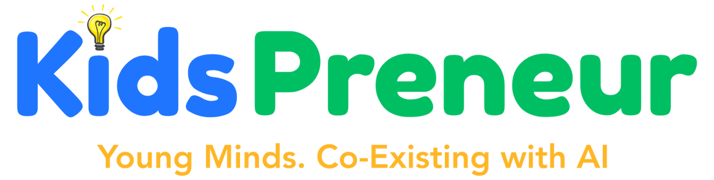
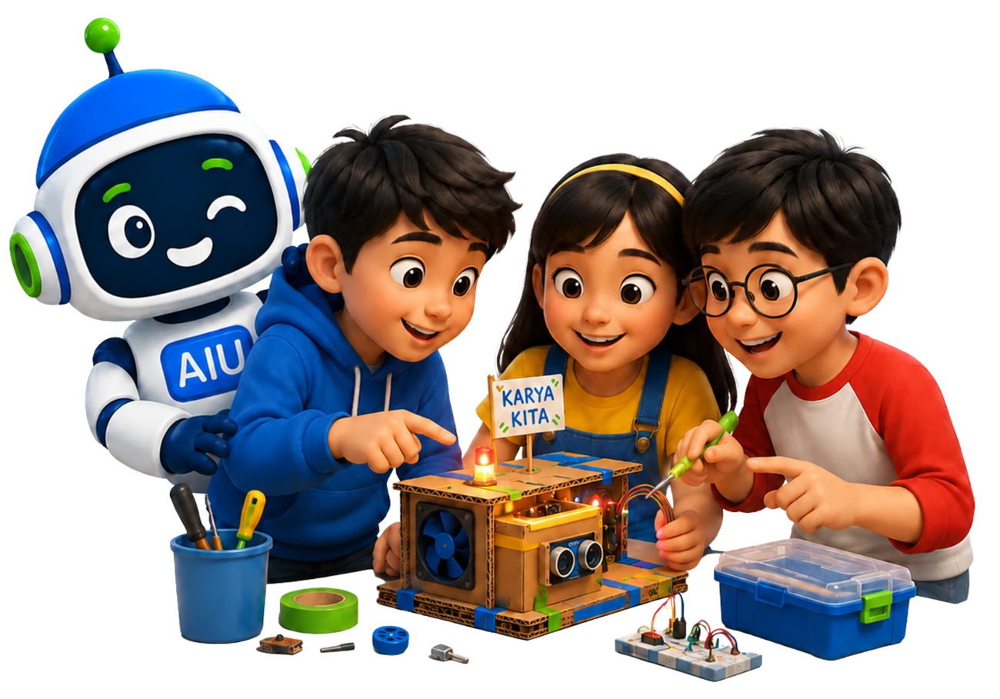
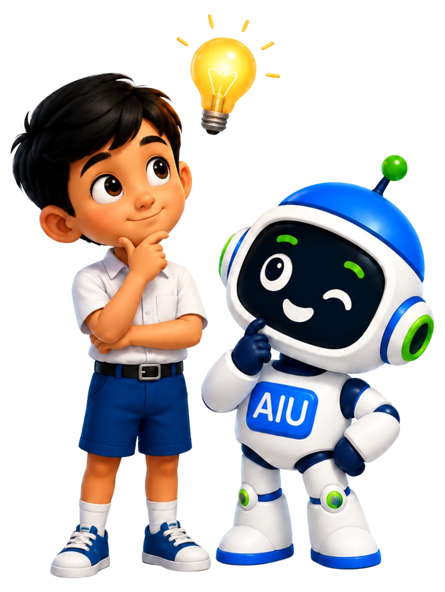

Pendaftaran Batch #1 resmi dibuka. Kelas kecil, kuota terbatas.
Claim Your Spot
Anak-anak tumbuh di dunia di mana AI bisa menghasilkan jawaban dengan cepat. Keunggulan mereka datang dari kemampuan mengajukan pertanyaan yang lebih baik, mengevaluasi informasi, mengambil keputusan, berkolaborasi, dan mengubah ide menjadi hasil yang bermakna.
Memecah masalah dan menilai informasi secara logis.
Menemukan solusi baru untuk masalah nyata.
Memahami cara kerja sekaligus batas dari AI.
Terus bertanya dan cepat menyesuaikan diri.
Menyampaikan ide dengan jelas dan meyakinkan.
Bekerja secara efektif di dalam tim.
Mengambil keputusan yang etis dan bijak.

Memadukan literasi AI dengan kemampuan membangun bisnis.
Anak mengerjakan masalah nyata dengan output proyek yang konkret.
Keputusan, empati, dan nilai tetap ada di tangan anak.
Belajar dalam tim kecil dengan bimbingan mentor berpengalaman.
Satu perjalanan yang berkelanjutan, bukan lima mata pelajaran yang terpisah.
Mengenali masalah nyata, kebutuhan pengguna, dan peluang yang relevan.
Menghasilkan berbagai kemungkinan dan memilih ide yang menjanjikan.
Membangun value proposition, brand, prototipe, dan konsep bisnis awal.
Menguji asumsi, mengumpulkan feedback, dan memperkuat solusi.
Mempresentasikan masalah, bukti, solusi, dan perjalanan belajar dengan percaya diri.
Level 1 adalah titik awal utama. Anak dapat melanjutkan ke level berikutnya untuk memperdalam validasi, execution, dan presentation.

AI membantu anak mengeksplorasi kemungkinan. Enam guardrail berikut membentuk kebiasaan digital yang aman, kritis, dan jujur.
Tidak memasukkan informasi sensitif ke platform AI.
Memeriksa fakta, sumber, logika, dan asumsi sebelum menggunakan jawaban.
Menjelaskan bagian mana yang dibantu AI dan bagian mana yang dibuat sendiri.
Tidak mengarang data, testimoni, visual, atau hasil riset.
Tidak menerima jawaban AI hanya karena terdengar meyakinkan.
Nilai, empati, konteks, dan keputusan akhir tetap milik anak.
Memahami usia, minat, pengalaman, level komunikasi, dan familiaritas anak dengan AI.
Merekomendasikan titik masuk dan jalur belajar yang sesuai.
Anak diberi tanggung jawab yang jelas menuju hasil bersama.
Mentor memberi struktur, pertanyaan, dan batas penggunaan yang aman.
Ide diuji, dipresentasikan, didiskusikan, dan diperbaiki.
Anak mengubah proses dan proyeknya menjadi sebuah presentasi.
Pitch Day memberi anak alasan yang nyata untuk menyusun cerita, menunjukkan bukti, menjawab pertanyaan, dan berdiri di balik keputusan mereka.
Setiap angkatan ditutup dengan pengalaman Mini Shark Tank yang nyata, menghadirkan guest star ternama dari ekosistem entrepreneur, investor, founder, atau industri.
Lebih dari sekadar feedback. Ini bisa membuka pintu menuju peluang dunia nyata.
Kami menciptakan peluang. Peluang tidak dijamin dan sepenuhnya bergantung pada kebijakan guest star, mitra, dan ekosistem.
Dari proyek siswa menjadi peluang dunia nyata.
peserta program pitching kewirausahaan UNESCO melaporkan peningkatan rasa percaya diri serta komunikasi, perencanaan bisnis, dan kemampuan memecahkan masalah yang lebih baik setelah workshop, mentoring, dan pitch akhir.
Setiap pitch adalah langkah maju. Percaya diri hari ini. Peluang esok hari.
Tidak. Program dimulai dari dasar sehingga anak tanpa pengalaman pun dapat mengikuti.
Rentang usia sedang dikonfirmasi (pending). Silakan hubungi kami untuk kesesuaian usia anak Anda.
AI dipakai sebagai partner berpikir dengan panduan mentor dan batas penggunaan yang aman.
Anak diwajibkan memverifikasi, mengungkap, dan mempertanyakan output AI; keputusan tetap di tangan mereka.
Dalam tim kecil, dengan tanggung jawab yang jelas untuk setiap anak.
Melalui asesmen awal yang menilai usia, minat, pengalaman, dan familiaritas dengan AI.
Artefak proyek seperti problem brief, brand kit, prototipe/landing page, pitch deck, dan portfolio.
Sekitar 5 minggu per level, dengan dua sesi per minggu.
Ya, Pitch Day merupakan puncak dari perjalanan belajar sebagai showcase edukatif.
Kebutuhan perangkat sedang dikonfirmasi (pending). Detail akan diberikan sebelum kelas dimulai.
Mekanisme update progres sedang dikonfirmasi (pending) dan akan dijelaskan saat pendaftaran.
Kebijakan kehadiran dan kelas pengganti sedang dikonfirmasi (pending).
Tidak. Pitch Day adalah showcase edukatif; peluang lanjutan bergantung pada tamu/mitra dan tidak dijamin.
Mari berdiskusi tentang usia anak, minatnya, pengalaman saat ini, level yang sesuai, hasil belajar yang diharapkan, dan cohort mendatang.
Chat via WhatsAppWaktu respons yang diharapkan: 1–2 hari kerja. Kami menghubungi Anda melalui kanal yang Anda pilih.